1 · The kept logo
Two files ship on the live site. They are used here byte for byte: never redrawn, recoloured, cropped, outlined or shadowed (logo usage rules ⟦S0011⟧).
Reversed (cream #F1EFE6) on ink · 16.0:1Clear space = the height of the O (the mark)
Measured with getBBox: the O oval is 57.6 × 50.1 in a 185 × 75 viewBox, so x = 0.668 × lockup height. At a 72px header lockup, x = 48px of clear space on every side.
Sizes · minimum 120px wide for the full lockup
"ROOFING" stays legible to 120px wide. Below that, only the reversed or full-colour lockup at 120px is allowed. There is no separate icon file, and cropping the O out of the lockup would break the rule against cropping, so the favicon stays Owl's own owl-roofing-favicon.jpg.
Micro-animation in place, with no redrawing
The SVG is built from 18 paths. The two amber eyes (paths 9-10, about 6.7px discs) and the two pupils (paths 11-12, 2.6px ink dots) are separate shapes. So the kept artwork can blink (scaleY on the eye discs for about 120ms) and glance (pupils translate up to 1px toward the pointer or the next section) while every pixel of the drawing stays Owl's. This motion language is mine to design; the drawing is not (gliding pupils and blinks: rossark motion ⟦S0489⟧).
2 · Owl's colours, as the live site uses them
Frequency-ranked from main.min.css with the Bootstrap defaults removed. Roles follow the seven-role method of ⟦S0607⟧; all eight are Owl's own values.
Every pair, measured (WCAG 2): green = body text ≥ 4.5 · yellow = large text/UI ≥ 3 · red = fails
Readings that shape the rebuild: amber can never be text on a light ground (2.09:1 on paper); it is a fill carrying ink (8.49:1), or text on a dark ground (5.03-8.49:1). Tan text fails as body on paper (3.90:1), so it is for large text and graphics only. Olive carries white or cream text (5.54 / 4.81:1).
3 · Type: Owl's faces and the everyday stand-ins
The live site sets Special Gothic Expanded (display, open licence) and Texta (body, commercial). The owner's standing rule is everyday fonts only, so the rebuild uses the closest staples, named as stand-ins (⟦S0607⟧ "stand-in for").
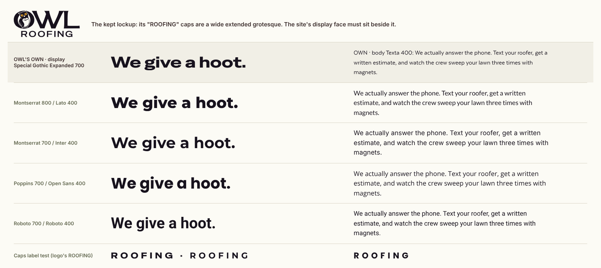
Display → Montserrat 800 / 700
The widest geometric staple. It is closest to Special Gothic Expanded and to the logo's own spaced "ROOFING" caps (see the caps test row).
Body → Lato 400 / 700
Warm and humanist like Texta. Inter reads colder; Poppins' round "a" turns childish beside the owl; Roboto is condensed, the wrong width entirely.
4 · Owl's own material
Asset rule: Owl's own material comes first, starting with the hero video. Stock is labelled as stock and never captioned as an Owl job.
Owl-BG-Condensed: 15.6 s, 1280×720, h264 + webm. GAF Timberline bundles carried up, the crew in yellow Owl shirts, a finished dark roof by a brick chimney, decking lifted in.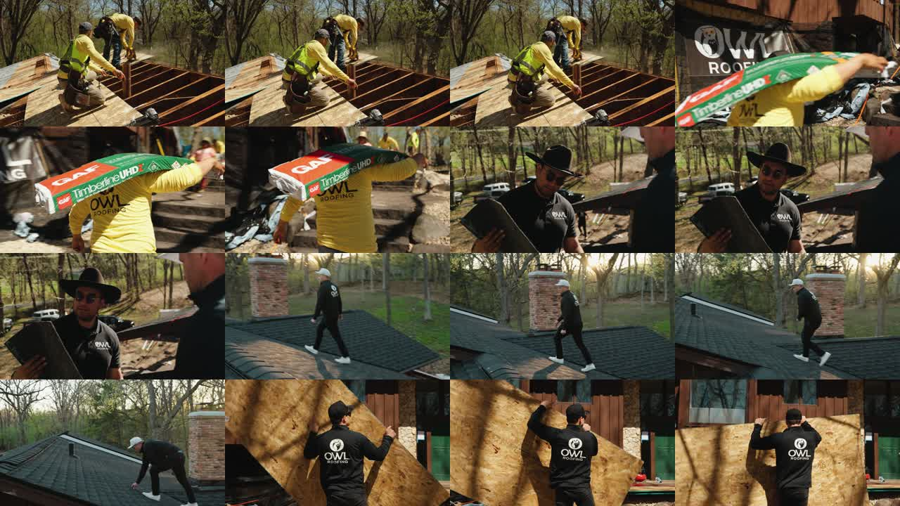
Photographs
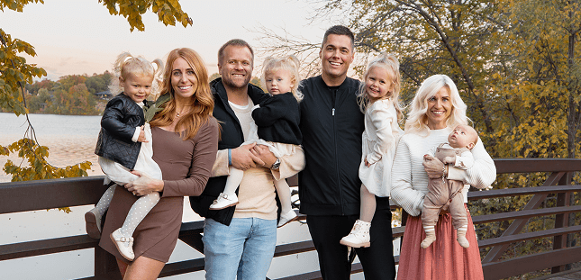
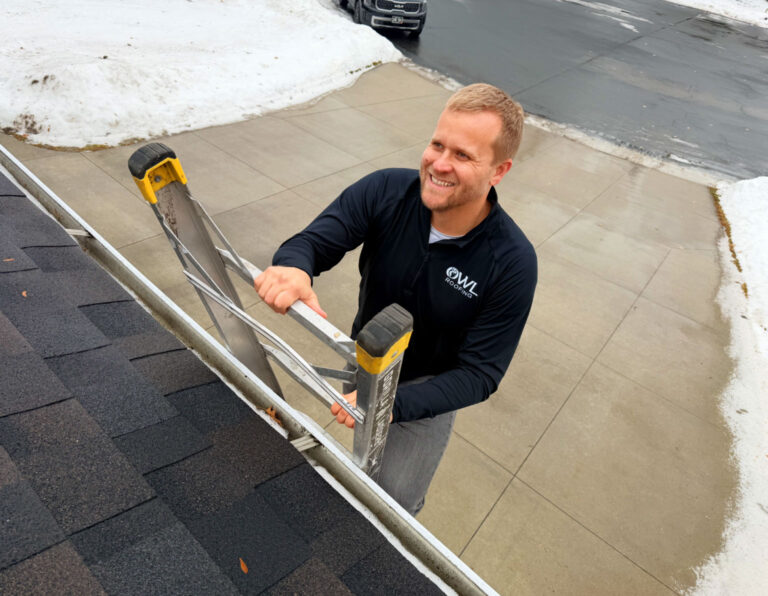


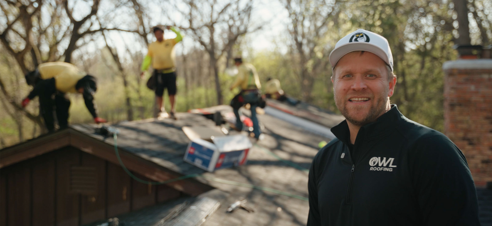
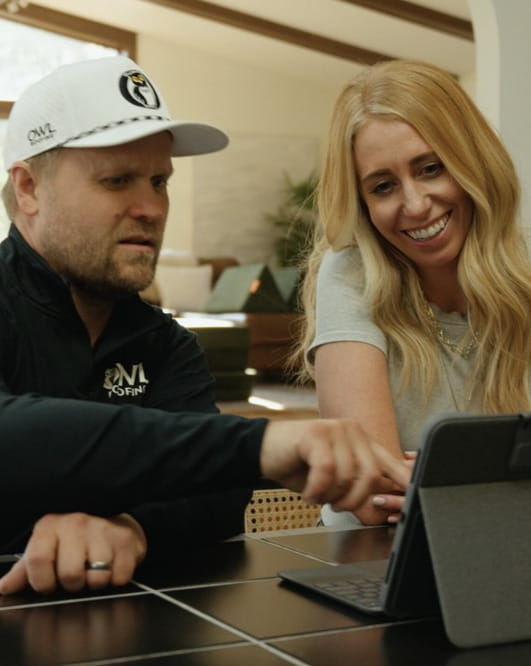

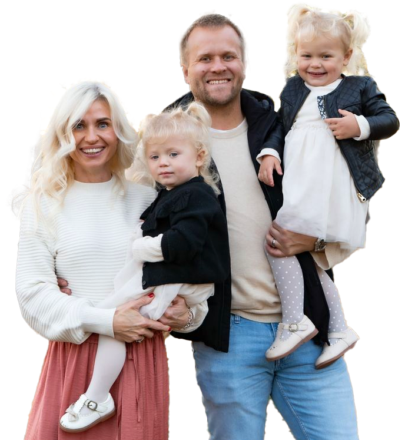

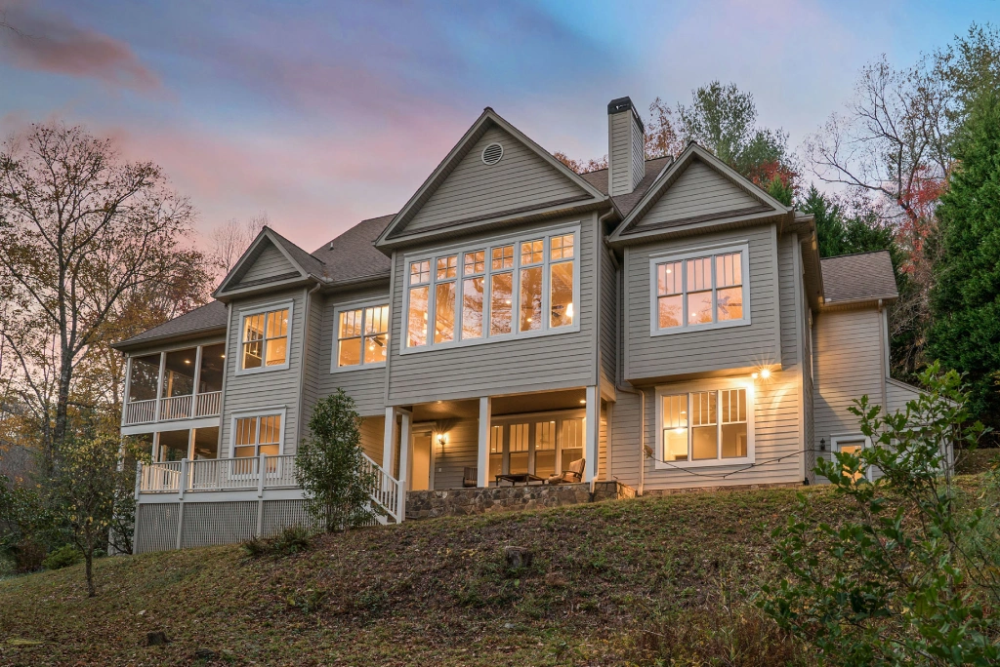
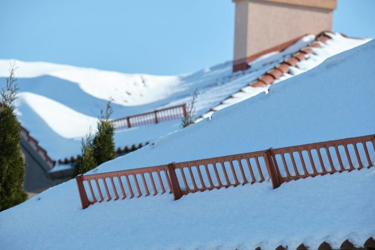

Badges, videos and Owl's own drawn backgrounds
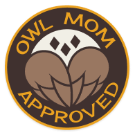

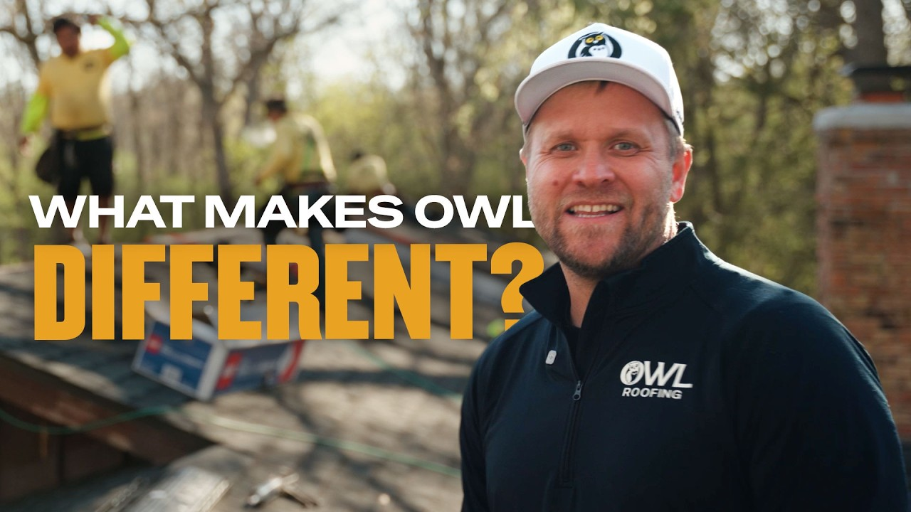
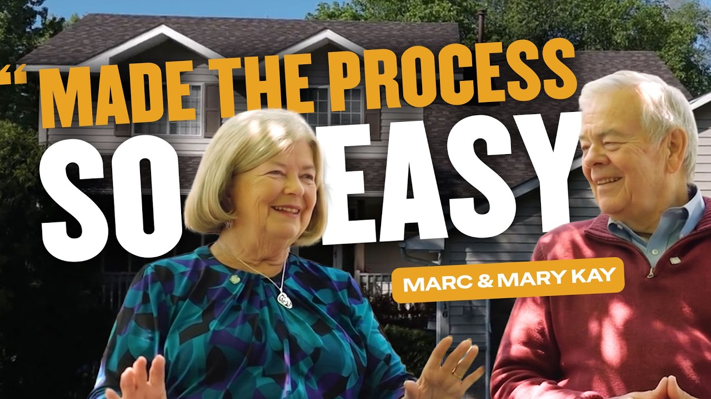
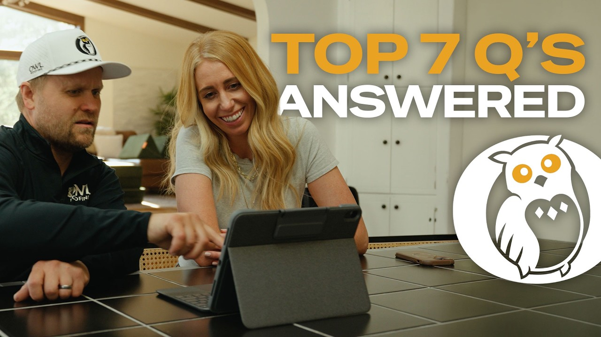
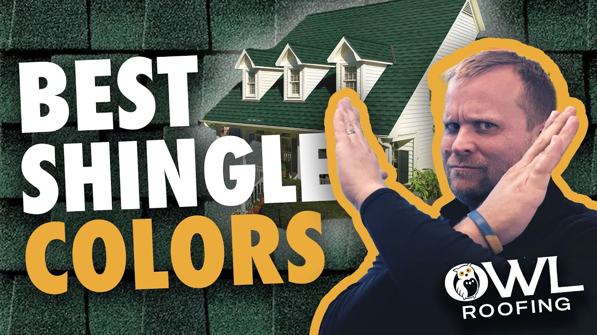
5 · The live site, as it stands
The owlroofing.com homepage, rendered from its own source and assets: 9,001px tall, 1,360 words.
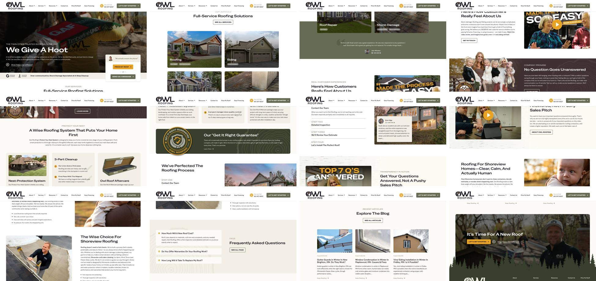
6 · Audit: what the rebuild keeps, fixes and invents
Keep (theirs, and strong)
- The owl lockup, the amber eyes, the reversed cream form.
- A warm earth palette: olive moss, deep olive, bark brown, tan, cream and paper, with amber as the one spark. All eight values are coherent (hues 23°-131° plus a violet ink at 305°).
- Real footage of their own crew, both families, and the Protect Your Nest system actually photographed.
- Their own drawn language: tree-ring contours and a pine treeline. The forest an owl lives in is already in their files.
- Named systems with personality: We Give a Hoot, We actually answer the phone, Protect Your Nest, the shingle tomb, Price My Roof, Text Your Roofer, Wise Check.
Fix (measured problems)
- A document, not an experience: 1,360 words of stacked heading + paragraph blocks.
- Template chrome: a tracked ALL-CAPS eyebrow over almost every heading, and identical card grids (AI cluster 5, ⟦S0001⟧).
- The best asset is wasted. The hero video sits behind a dark overlay with text on top, and the two YouTube videos are buried inside paragraphs.
- Their facts disagree: reviews shown as 80+, 90+ and 100+; Suite 230 vs Ste 135; BBB "A+" in one table vs A− at BBB. The rebuild locks one fact set (the addendum's).
- The hero video's poster is
happy-homeowners-owl-roofing.jpg(Noah at a tablet), not a frame of the crew footage. The first paint never matches the film that follows. - Stock photos captioned like Owl work; the house exteriors cannot be proven as Owl jobs.
- Amber is set as a text colour in 8 rules (for example paragraph-link hover and the current menu item). On light grounds that is 2.09-2.17:1. In the rebuild amber is never text on a light ground.
Invent (my job, on top of their identity)
- A motion language for the kept logo: blink and glance in place.
- An SVG system grown from their own files: tree rings, treeline, nest, feathers, shingle courses.
- The hero built around the real footage, not pasted behind text.
- Structure: fewer, deeper pages and one flow line (Lusion), pinned proof beats (AirPods Pro), one playful section (Bruno Simon), and Price My Roof as an instrument (Quiet Cubes).
- A cursor companion drawn from the owl, in 2-3 switchable variants.